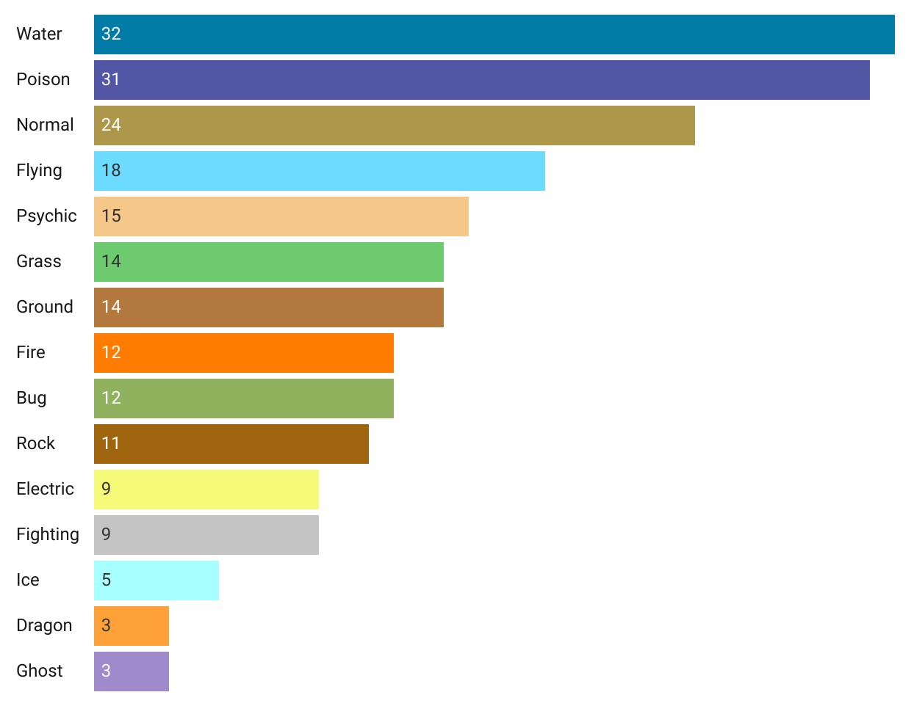
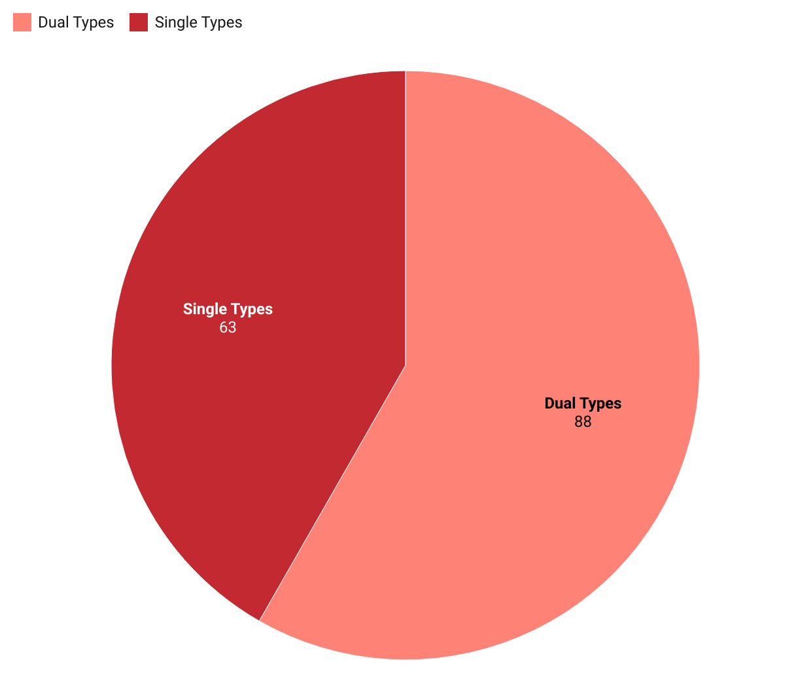

By: Diana Bravo
If you want to be the very best like no one ever was... Well, you've gotta know all their types!
In Pokémon games, different Types have natural strengths and weaknesses. As a result, it's important to know the types of each member on your competition team, lest you
In the original Generation 1 Pokémon games released in 1998, the developers included a total of 151 Pokémon belonging to 15 different types. These types ranged from the three Pokémon starter types of Water, Grass, and Fire all the way to rarer types like Ghost or Dragon types.

Pokémon Gen 1 had an abundance of Water, Poison, and Normal Types.
In Pokémon, each of the game's titular Pocket Monsters can have up to two types. As a result, Gen 1 has several dual typed Pokémon.

Even though the majority of Gen 1’s Pokémon are dual typed, that doesn’t mean they’re any weaker than their single typed counterparts. A single type Electric Pikachu can defeat a dual typed Lapras if you play your cards right. In the end, whether a player wins or loses a match ultimately boils down to a combination of their Pokémon’s type, their level, and what type and level of Pokemon they’re up against.
So there you go, everything you could possibly ever want to know about how many of each Type exist in Pokemon Gen 1. Now go forth and catch 'em all!